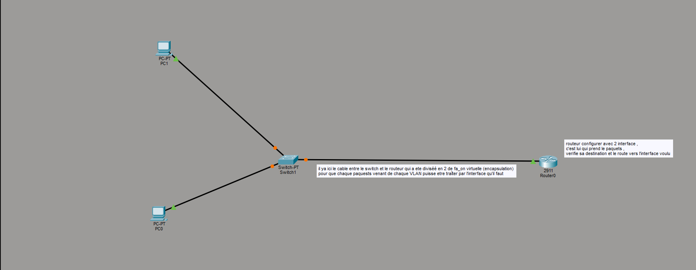

Supervision à distance de groupes électrogènes
Projet de stage : un système de supervision d'équipements industriels, avec remontée de télémétrie vers une plateforme IoT.

Étudiant ingénieur en réseaux et cybersécurité à l'ENSI Tanger. Je construis des infrastructures, je les supervise et je cherche leurs failles.
Projet de stage : un système de supervision d'équipements industriels, avec remontée de télémétrie vers une plateforme IoT.

Deux VLAN (10 et 20) reliés par un trunk à un routeur 2911, qui traduit leurs adresses privées en une adresse publique pour joindre un serveur externe. Une ACL étendue filtre le trafic du VLAN 20.
Résultat : PC0 et PC1 partagent la même adresse publique (203.0.113.1) bien qu'ils soient dans des VLAN différents, ce que je vérifie avec show ip nat translations.

Deux PC dans deux VLAN différents, un switch et un routeur. Le câble entre le switch et le routeur est divisé en deux sous-interfaces virtuelles (encapsulation) : chaque paquet venant d'un VLAN est traité par l'interface qui lui correspond.
Le routeur vérifie la destination du paquet et le dirige vers la bonne interface, ce qui permet aux deux VLAN de communiquer.
Je suis en dernière année du cycle ingénieur en Génie Informatique, option Cybersécurité, à l'ENSI Tanger (MAROC).
Curieux et passionné par la cybersécurité, je m'intéresse particulièrement à la sécurité des réseaux et des infrastructures, au test d'intrusion (Pentesting) ainsi qu'à l'analyse des vulnérabilités. J'aime explorer les mécanismes des systèmes, identifier leurs failles de sécurité et comprendre les différentes techniques permettant de mieux les protéger. À travers la pratique, les challenges CTF et la veille technologique, je cherche constamment à approfondir mes connaissances. Actuellement à la recherche d'un Projet de Fin d'Études (PFE), je souhaite mettre mes compétences en pratique et contribuer à des projets concrets dans le domaine de la cybersécurité.